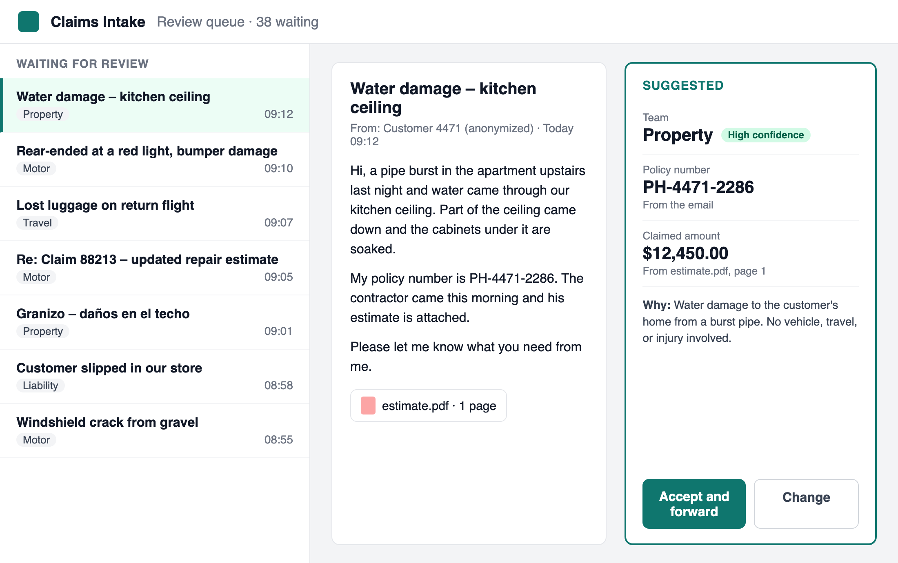

Fabrikam Insurance · Contoso Consulting
October 22, 2026
We recommend an 8-week pilot on the Motor inbox, with a fix for scanned claim forms.
of emails routed to the right team, against a 90% target
to handle an email with a handler checking, down from 6 min 10 s
of claimed amounts read correctly, short of the 95% target because of scanned forms
Source: POC test on 600 anonymized emails from January to June 2026. Time study with 3 handlers, 150 emails.
Source: Fabrikam time study, March 2026.
| Criterion | Target | Result | Status |
|---|---|---|---|
| Routed to the right team | ≥ 90% | 92.5% (555 of 600) | Met |
| Policy number read correctly | ≥ 95% | 97.8% (587 of 600) | Met |
| Claimed amount read correctly | ≥ 95% | 88.2% (300 of 340) | Not met |
| Handling time, with a handler checking | < 1 min | 41 s on average, from 6 min 10 s | Met |
| Customer data stays in Fabrikam's tenant | Required | Signed off by Raj, September 30 | Met |
Source: POC test on 600 anonymized emails labeled by Fabrikam's intake team. Claimed amount: the 340 emails that state one.

Most Liability misses were injury emails that mention a car, which went to Motor.
Source: POC test on 600 anonymized emails from January to June 2026. Bars run from 0 to 100%.